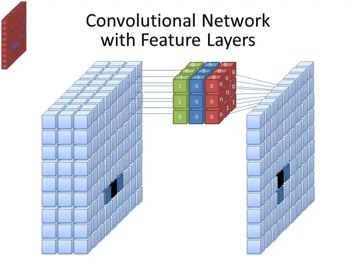
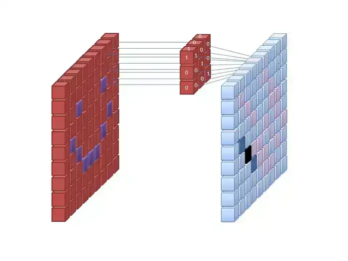

The accusation
The 2021 paper “On the Dangers of Stochastic Parrots” argued that large language models are trained to model the probability of the next token, and that fluent output is no evidence of meaning. The name stuck: a very good mimic, with no referent behind the words.
Maps, diagrams and images





The paper's substantive points were about risk as much as ontology: models absorb the biases of their training data, they can produce confident falsehoods, and the environmental and labour costs of scale are concentrated away from the beneficiaries.
The counter-case
The strongest argument for something more than parroting is that prediction is hard in a way that forces structure. To predict the next move in a chess game, or the next line of a program that will run, a model benefits from representing the state of the board or the interpreter.
There is direct evidence of this: probes trained on the internal activations of models trained only on chess transcripts recover a representation of the board state, and models trained on Othello move sequences track legal moves and board positions. Similar work finds representations of space, colour and object identity in vision-language models.
Parrot side: 'it is only statistics' is true of every learning system, including brains, and does not by itself settle anything. Fluency plus stored representations is compatible with a lot of competence and no understanding in the human sense — the disagreement is about which.
World-model side: recovering a board state is not the same as understanding chess, and benchmark performance collapses under small distribution shifts, which suggests brittle, task-specific structure rather than a general model.
The honest answer: current systems demonstrably contain some structured representations of some domains, and they demonstrably fail in ways that a robust world model would not. 'Parrot' and 'world model' are both slogans for a spectrum nobody has measured well.
The archive labels this live debate because the empirical question — what is represented, and how generally — is open, while both camps' public claims are stronger than their evidence.
Why it is in the archive
Because the same argument appears in every generation of AI hype and panic, and because the fringe versions — the model is conscious, the model is a fraud — are both alive in public discussion.
Related: scaling laws, AI risk.
Sources for this page
- Wikipedia, “Stochastic parrot” — the critique and responsesen.wikipedia.org
- Bender, Gebru, McMillan-Major & Shmitchell (2021), FAccT — “On the Dangers of Stochastic Parrots”doi.org
- Li et al. (2023), emergent world representations in Othello, arXiv:2210.13382arxiv.org
- Wikipedia, “Large language model” — capabilities and limitsen.wikipedia.org
Open resources on this topic
- PapersOpen-access articles: DOAJ · PubMed Central · Internet Archive Scholar
- BooksPublic-domain and borrowable copies: Open Library · Project Gutenberg · Google Books · Internet Archive
Cite this page
Momin, S. (2026). Stochastic Parrots or World Models. The Larger World Archive. https://drsamonline.github.io/LARGE_GLOBE/stochastic-parrots.htmlMomin, Sohil. “Stochastic Parrots or World Models.” The Larger World Archive, 2026, https://drsamonline.github.io/LARGE_GLOBE/stochastic-parrots.html.Momin, Sohil. “Stochastic Parrots or World Models.” The Larger World Archive, 2026. https://drsamonline.github.io/LARGE_GLOBE/stochastic-parrots.html.@misc{stochastic2026stochastic,
author = {Momin, Sohil},
title = {Stochastic Parrots or World Models},
year = {2026},
howpublished = {The Larger World Archive},
url = {https://drsamonline.github.io/LARGE_GLOBE/stochastic-parrots.html},
note = {Last reviewed 20 November 2026}
}Last reviewed 20 November 2026 · Corrections policy · this page is not peer reviewed